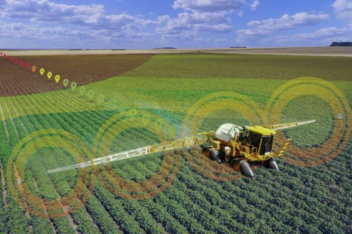
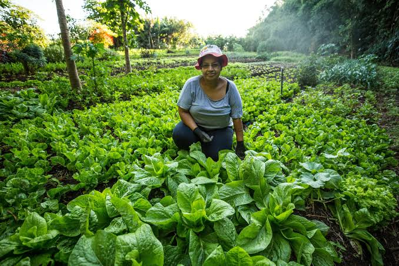
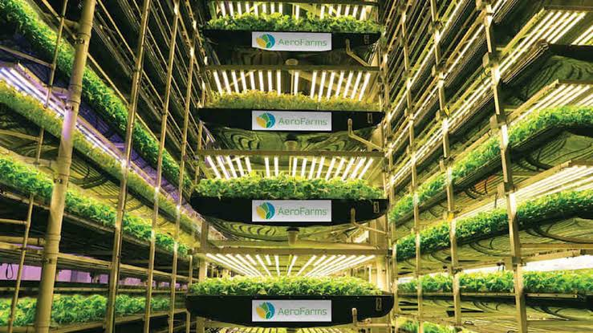
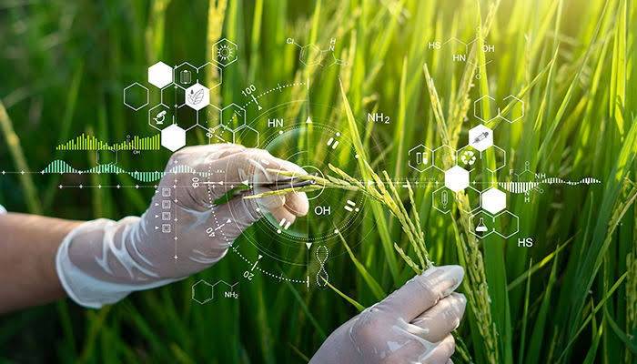
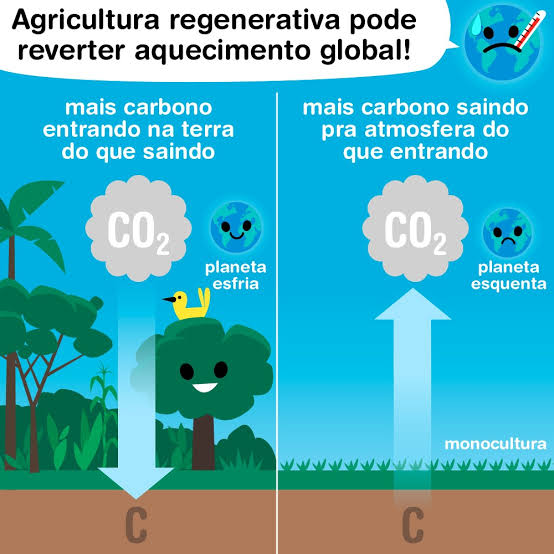

- Agricultura de Precisão: A agricultura de precisão utiliza tecnologias avançadas como GPS, sensores e drones para monitorar e gerenciar as variáveis da produção agrícola. Isso permite que os agricultores tomem decisões baseadas em dados para otimizar o uso de recursos como água e fertilizantes, aumentando a produtividade e reduzindo o impacto ambiental.

- Agroecologia e Agricultura Sustentável: Essas práticas buscam integrar princípios ecológicos e sociais à produção agrícola, promovendo a biodiversidade, a saúde do solo e o bem-estar das comunidades rurais. A agroecologia valoriza o conhecimento local e a diversificação das culturas, enquanto a agricultura sustentável foca na conservação dos recursos naturais para as futuras gerações.

- Cultivo Vertical e Agricultura Urbana: O cultivo vertical e a agricultura urbana estão ganhando popularidade em áreas urbanas densas. Utilizando estruturas verticais e sistemas hidropônicos ou aeropônicos, essas práticas permitem o cultivo de alimentos em espaços limitados, muitas vezes com maior eficiência no uso da água e menor necessidade de pesticidas.

- Biotecnologia e Edição Genética: A biotecnologia tem possibilitado o desenvolvimento de culturas geneticamente modificadas que são mais resistentes a pragas, doenças e condições climáticas adversas. Técnicas de edição genética, como CRISPR, estão sendo usadas para melhorar ainda mais as características das plantas, como o valor nutricional e a resistência ao estresse.

- Agricultura Regenerativa: A agricultura regenerativa foca na restauração da saúde do solo e na captura de carbono, contribuindo para a mitigação das mudanças climáticas. Práticas como o plantio direto, a rotação de culturas e o uso de adubos verdes são centrais para essa abordagem, que busca criar sistemas agrícolas mais resilientes.
